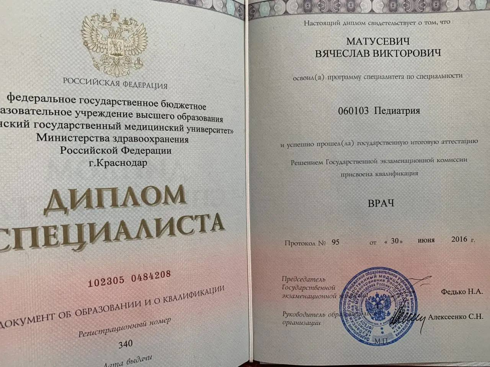
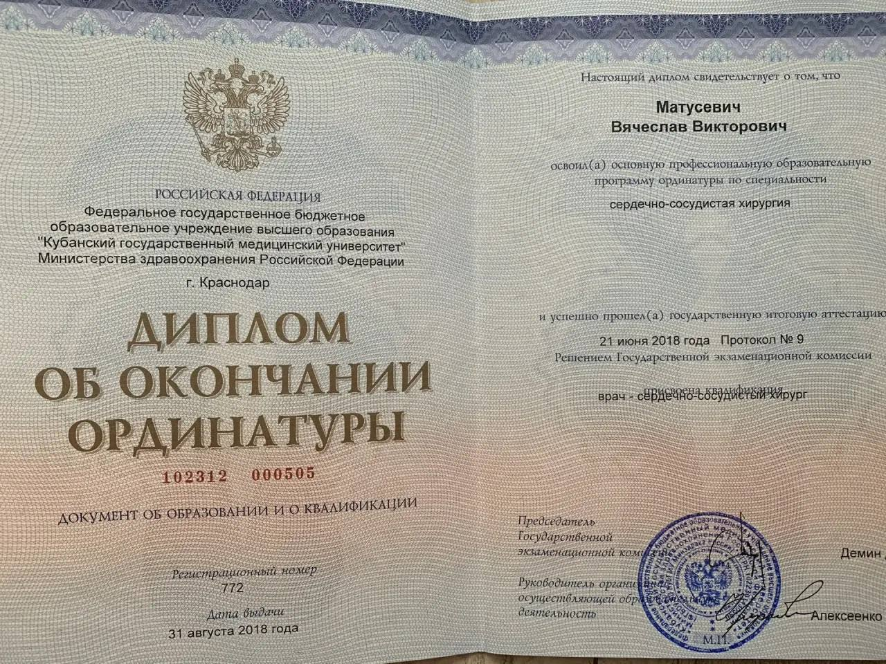
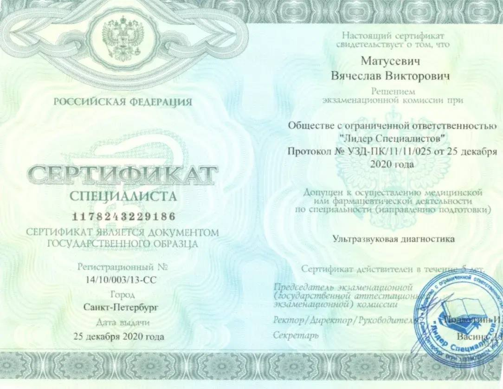
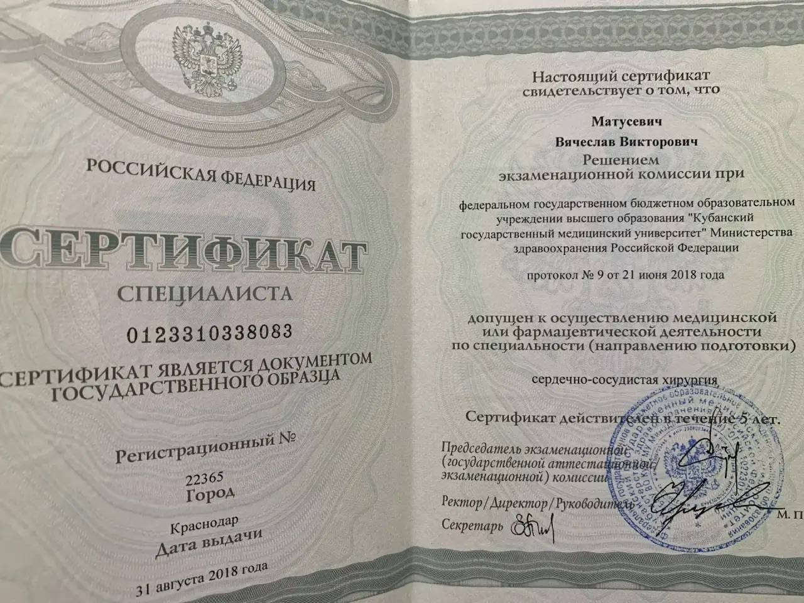
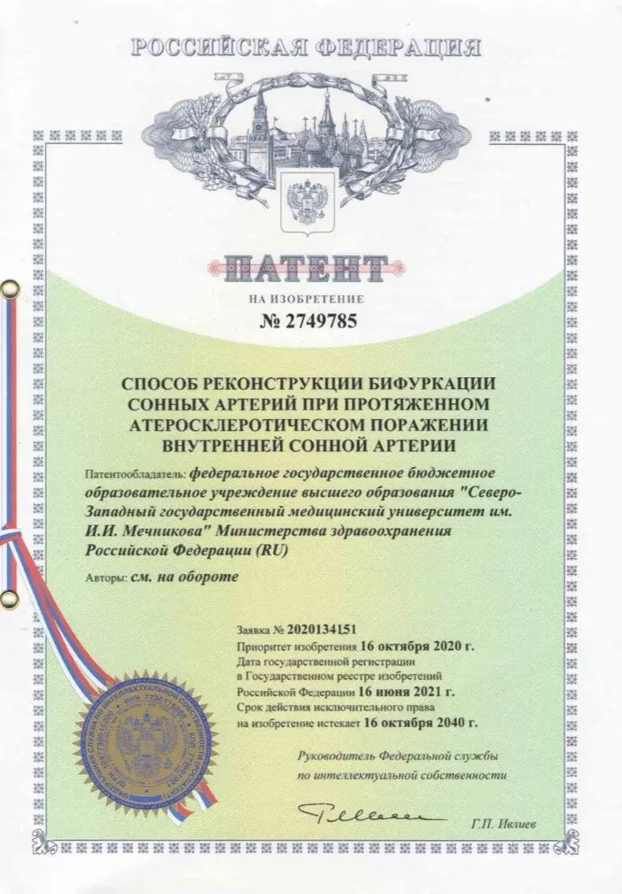
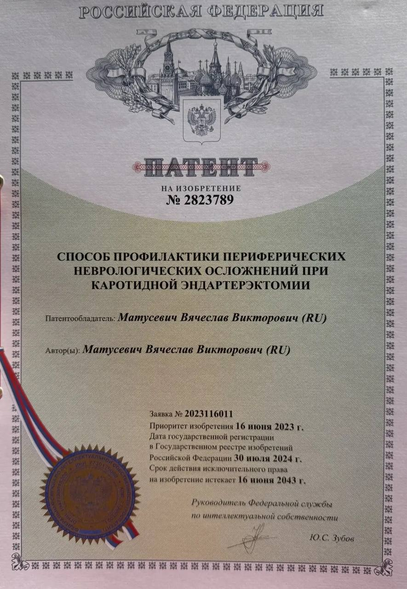
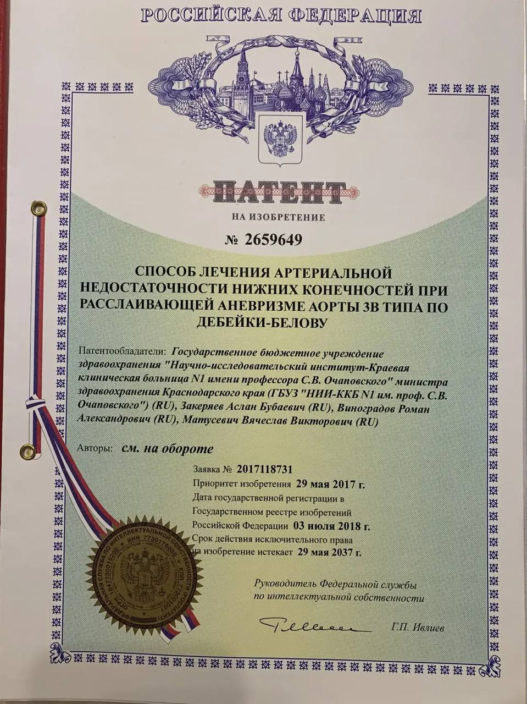
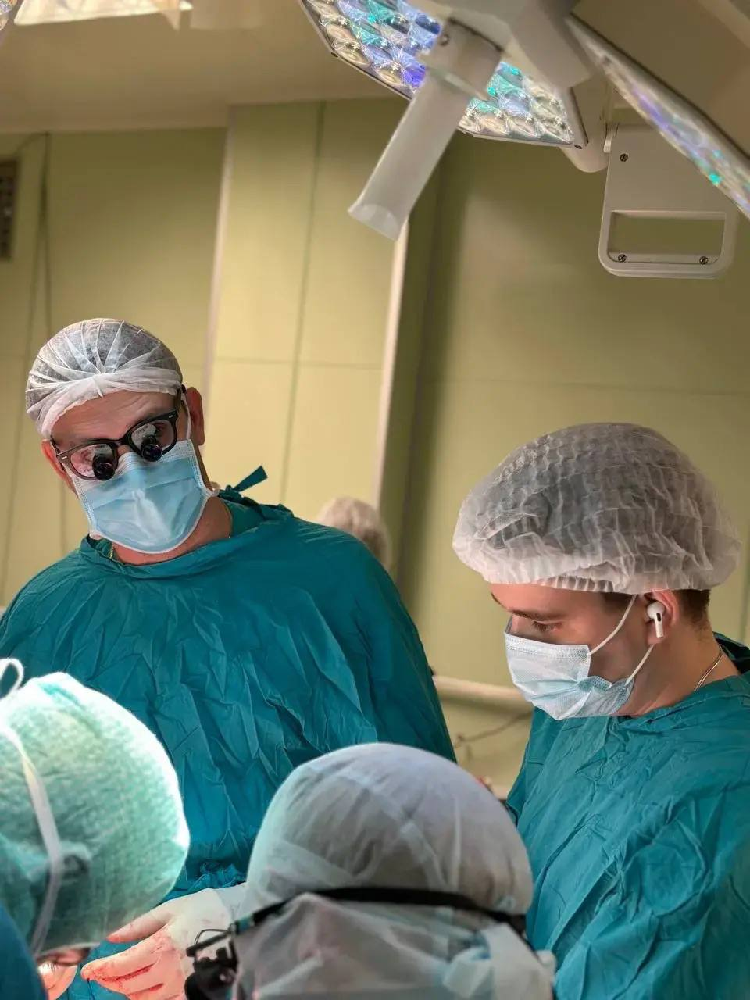

Высокие стандарты сосудистой хирургии
Матусевич
Вячеслав Викторович
Помощь экспертного уровня для пациентов любого возраста.
Записаться на прием
Высокие стандарты сосудистой хирургии
Помощь экспертного уровня для пациентов любого возраста.
Записаться на прием
Фундаментальные знания
От академической базы КубГМУ до узкой специализации. Постоянное обучение — мой залог безопасности и предсказуемого результата.

Базовое образование
КубГМУ

Ординатура
ССХ

УЗ-диагностика
Проф. переподготовка

Допуск к ССХ
Аккредитация
«Медицина — это искусство, подкрепленное наукой»

Способ реконструкции бифуркации сонных артерий

Профилактика неврологических осложнений при КЭЭ

Лечение недостаточности при аневризме аорты

Гломуссохраняющие каротидные эндартерэктомии
Российский медико-биологический вестник
Результаты применения гломуссохраняющих КЭЭ
Медицинский вестник Северного Кавказа
Effective carotidal endarterectomy in combination with bypass
ResearchGate • English Edition
Российский кардиологический журнал
Elpub • Научные публикации

Ежедневная хирургическая практика позволяет совершенствовать методики лечения сосудистых заболеваний, обеспечивая пациентам безопасность и кратчайшие сроки реабилитации.
«Хирургия — это ответственность, а благодарность здорового пациента — высшая награда за этот труд и заботу»
«Профессионал с большой буквы. Операция на венах прошла идеально, восстановилась очень быстро.»
Анна К.
«Внимательный и грамотный доктор. Подробно объяснил весь план лечения сонных артерий.»
Михаил С.
«Очень довольна результатом склеротерапии. Сосудистая сеточка исчезла, ноги выглядят отлично!»
Ольга П.
«Грамотный специалист. Оперировал отца по поводу аневризмы, всё прошло успешно, отец на ногах.»
Дмитрий В.
Скрининг сосудистой системы и постановка диагноза за один визит.
Реконструктивные операции на сонных артериях, аорте и нижних конечностях.